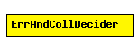

File: NetworkInterfaces/MF80211/phyLayer/decider/ErrAndCollDecider.ned
C++ definition: click here
Decider module to use with digital channel modules like GilbertElliotSnr
This component has been taken over from Mobility Framework 1.0a5.
The following diagram shows usage relationships between modules, networks and channels. Unresolved module (and channel) types are missing from the diagram. Click here to see the full picture.
| Name | Type | Description |
|---|---|---|
| debug | bool | debug switch |
| snrThresholdLevel | numeric |
| Name | Direction | Description |
|---|---|---|
| uppergateOut | output | |
| lowergateIn | input |
simple ErrAndCollDecider parameters: debug : bool, // debug switch snrThresholdLevel: numeric; gates: out: uppergateOut; in: lowergateIn; endsimple